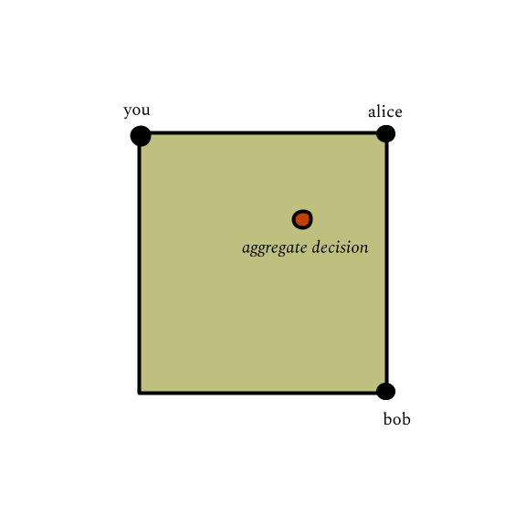

date: 10.23.2025
what kinds of decisions can be made fairly?
A social choice model is a framework which aggregates individual preferences into a collective decision. It is often reasonable to model the possible preferences one could have as a topological space \(X\), and the social choice model as a continuous map \(X^n \rightarrow X\). We ask the question: for which space X does there exist such an aggregator map which is fair (anonymity) and faithful (unanimity)? There are very few, and in this talk, I tell you what they are.
This is a 40 minute lunch talk and is accessible to a general audience. The main references are Beno Eckmann's Social choice and topology: a case of pure and applied mathematics (2004 rephrasing of work done in 1954) and Shmuel Weinberger's On the topological social choice model (2004).
Suppose you are meeting your friends Alice and Bob at a park. You are deciding where to meet up before walking around together. You live near the north-west corner, so you suggest that. Alice will be getting coffee beforehand from her favorite coffee shop near the north-east corner, so she suggests that. Bob similarly suggests the south-east corner. How should you decide where to meet?
This is a totally uninteresting park, and you are going on a totally uninteresting walk, so there are no other factors other than your individual preferences. To be fair to everyone, you decide to meet somewhere in the middle -- together the three of you decide that for any uninteresting walk, the fair thing to do is to take the average of each of your preferred positions.
A few years later, you decide that you want to take an uninteresting walk with Alice and Bob again, this time around a circular lake. The averaging thing doesn't work so well anymore, but you come up with a different approach: you decide to meet at the point that minimizes the total distance traveled by all three of you.
Unfortunately, you discover that you are equidistant on the lake's edge. Now you have three possible aggregate points. To make matters worse, you realize that if you move half an inch in Alice's direction, you'd make everyone to go towards Alice, and if you move half an inch in Bob's direction, you'd make everyone go towards Bob.
This is horrible, it gives everyone too much power. This discontinuity is disconcerting. Ideally, we'd come up with a fair plan where if each person changes their decision a tiny bit, the collective decision should also only change by a tiny bit. But is it possible to do this in this situation?
Example ii.1. You are cooking with your \(n-1\) friends and deciding how much of each spice to put in, and each friend has a preference level for each spice. You could all decide on some spice choice function together: $$ (\text{spice space})^n \rightarrow \text{spice space}$$ and it would be a fair decision if it is invariant under the action of the symmetric group by permuting the friends. In other words, if any two friends swapped preferences, the end decision should be the same. We want it to actually track our preferences. It'd be silly if all of us want \(3\) salts in our food but the final decision is to put in only \(2\) salts. So we require that if we have a unanimous opinion, the final decision should reflect that.
We could, for instance, decide to take the average preference for each spice. We could also decide to take the minimum value for chili powder, and the maximum value for salt.
There are clearly many possible spice choice functions which satisfy our "fairness" and "faithfulness" criteria on our spice space which is a contractible subset of \(\mathbb{R}^n\).
Example ii.2. The teacher projects on the screen the footage from a remote-controlled telescope that could be turned \(360^{\circ}\), and each student has a preference for the angle of the sky-space to monitor. The teacher, being a dictator, chooses the angle that maximizes teaching goals. Then the map $$ (S^1)^n \rightarrow S^1=\text{sky space}$$ is a projection to the teacher component. Notice that this breaks our "fairness" criterion, though it doesn't break our "faithfulness" criterion. If the remote-control is broken and the telescope stucks in the same position, it'll break our "faithfulness" criterion but not our "fairness" one.
Question. Which spaces \(X\) admit social choice functions?
We can also phrase the question follows: unanimity forces the value of \(f\) on the diagonal, so we're actually just interested in the extension problem of extending $$(X^n/S_n)|_{\Delta} \rightarrow X$$ along inclusion into \(X^n/S_n\).
Let \(G\) be a group, an \(\)n-mean is a map $$\phi: G^n \rightarrow G$$ which is invariant under \(S_n\) action and \(f(x, \ldots, x) = x\) for all \(x\). Notice that by functoriality of the fundamental group functor \(\pi_1(-)\), the social choice function \(f:X^n \rightarrow X\) induces $$f_*: \pi_1(X^n) = \pi_1(X)^n \rightarrow \pi_1(X)$$ which is an \(n\)-mean on \(\pi_1(X)\). A similar thing happens for all \(\pi_k(X)\). Then if we get conditions on the existence of a group \(n\)-mean, this gives conditions on the existence of a social choice function.
Proposition. If \(G\) admits an \(n\)-mean for some \(n\geq2\), then \(G\) is abelian and multiplication by \(n\) is an automorphism on \(G\).
Now let's see what group means could possibly look like. Write \(g=n^{-1}\). We have $$nf(x_1,\ldots, x_n) = ng(x_1+\ldots+x_n) = x_1+\ldots+x_n$$ which means $$f(x_1,\ldots,x_n) = n^{-1}(x_1+\ldots+x_n).$$ So the \(n\)-mean is unique if it exists, and is precisely the "arithmetic mean". Then, if \(G\) is finitely generated and admits an \(n\)-mean, all elements of \(G\) must be coprime to \(n\), and in particular \(G\) cannot have free part. If \(G\) is finitely generated and admits an \(n\)-mean for every \(n\) then \(G=0.\)
Corollary. The sphere \(S^k\) does not admit social choice functions for \(n\) agents with \(n \geq 2\).
Theorem. If a connected space \(X\) with finitely generated homology admits social choice functions for any number of agents, then \(X\) is contractible.
The proof is simple: we inductively learn that each homotopy group is finitely generated, so admitting all the \(n\)-means implies that it is zero, so all the homotopy groups end up being zero.
What if we drop the finite generation hypothesis? Let's start simple: let's start with spaces with only one nontrivial homotopy group.
Definition. An Eilenberg-Maclane space \(X = K(G,k)\) is a space whose homotopy is concentrated in a single degree, i.e. $$ \pi_i(X) \cong \begin{cases} G & i=k \\ 0 & i \neq k \end{cases} $$
Homotopy classes of maps \(K(G_1,k) \rightarrow K(G_2, k)\) correspond to group homomorphisms \(G_1 \rightarrow G_2\).
For any \(n\), the arithmetic mean $$\mathbb{Q}^n \rightarrow \mathbb{Q}$$ corresponds to a map $$K(\mathbb{Q}^n, k)= K(\mathbb{Q}, k)^n \rightarrow K(\mathbb{Q}, k)$$ and we have to check that this does correspond to a social choice function. Phrased as an extension problem of lifting the diagonal, this turns out to be true by a lemma of Grothendieck on cohomology with rational coefficients.
Theorem. The space \(K(\mathbb{Q}, k)\) admits social choice functions for any number of agents.
It turns out these are all the possibilities, by some techniques of Hopf and Serre. Here's the complete classification.
Theorem. If \(X\) is a connected CW complex admitting social choice functions for any \(n\), then it is either
I would recommend reading Eckmann's note, it is rather lucid and frankly quite an entertaining historical account.
Last revised on 10.23.2025.